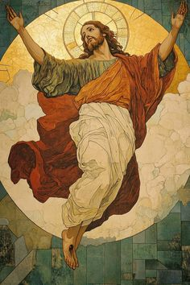

| Dalam pelajaran Agama saya belajar tentang Kebangkitan Yesus. Kami belajar bahwa Yesus telah bangkit daripada orang mati dan menampakkan dirinya selama 40 hari. Salah satu bukti Yesus bangkit iyalah saat murid-murid Yesus pergi ke sebuah tempat, mereka tiba-tiba di jumpai Yesus dan mereka diajak berjalan dengannya. |
|---|
|  |